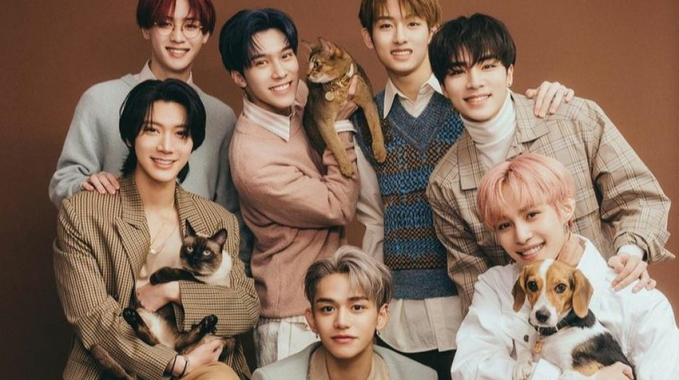

Singkatan dari Neo Culture Technology adalah sebuah boy group asal Korea Selatan yang dibentuk oleh SM Entertainment. Grup boyband ini terbagi menjadi beberapa sub-unit yaitu, NCT U, NCT 127, NCT Dream, dan Way V. Sejak diumumkan pembentukannya pada tahun 2016, grup ini telah berkembang hingga mencapai total 23 anggota yang tergabung dalam empat sub-unit berbeda.
NCT U
NCT U merupakan sub-unit pertama dari NCT. Mereka memulai debutnya dengan dua single yang dirilis pada 9 dan 10 April 2016. Nama mereka singkatan dari 'Neo Culture Technology United'. NCT U memiliki jumlah anggota 23 member, yang berarti semua member NCT merupakan member NCT U juga. Tetapi yang membedakan adalah disetiap lagu NCT U menggunakan anggota yang berbeda dan jumlah anggota yang menyanyikan lagunya pun berbeda-beda. Berikut anggota keseluruhan NCT U:
Taeil
Johnny
Taeyong
Yuta
Kun
Doyoung
Ten
Jaehyun
Winwin
Jungwoo
Lucas
Mark
Xiaojun
Hendery
Renjun
Jeno
Haechan
Jaemin
Yangyang
Shotaro
Sungchan
Chenle
Jisung
Sub-unit lagu: Make a Wish
NCT 127
NCT 127 merupakan sub-unit kedua dari grup vokal pria Korea Selatan NCT yang dibentuk oleh SM Entertainment. Nama unit mereka merupakan kombinasi dari akronim Neo Culture Technology dan angka "127" yang mewakili koordinat bujur kota Seoul. Debut pada 7 Juli 2016 dengan album mini NCT 127, anggota awal mereka terdiri dari 7 anggota: Taeil, Taeyong, Yuta, Jaehyun, Winwin, Mark, dan Haechan. Doyoung dan Johnny kemudian bergabung pada Desember 2016, menjelang perilisan album mini Limitless pada tahun 2017. Jungwoo kemudian diperkenalkan sebagai anggota baru pada September 2018, diikuti dengan album studio Regular-Irregular pada Oktober 2018.
Anggota yang aktif saat ini:
Taeil
Johnny
Taeyong
Yuta
Doyoung
Jaehyun
Jungwoo
Mark
Haechan
Anggota tidak aktif:
Winwin
NCT Dream
NCT Dream adalah sub-unit ketiga dari boy band asal Korea Selatan NCT, yang khusus beranggotakan remaja dengan usia belasan tahun. Pada awalnya, sub-unit ini memiliki sistem kelulusan di mana anggota yang melampaui usia 20 akan keluar, tapi pada 2020, sistem ini diganti dan menjadikan NCT Dream sebagai unit tetap NCT. Unit ini melakukan debutnya pada 25 Agustus 2016 dengan lagu "Chewing Gum".
Anggota:
Mark
Renjun
Jeno
Haechan
Jaemin
Chenle
Jisung
WayV

WayV adalah grup vokal pria asal Tiongkok yang merupakan sub-unit keempat dan unit yang berbasis di Tiongkok dari NCT dan dikelola oleh sub-label Tiongkok SM.